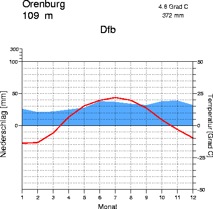
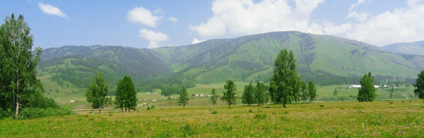

Voor het landklimaat heb ik uitgekozen Rusland. Ik vond Rusland het ideale land voor een Landklimaat. Je hebt in Rusland ook heel veel verschillen in het klimaat. Hoe Oostelijker hoe kouder. Rusland kan ook een hele mooie plek zijn. Op sommige plekken heb je er zelfs Toendra Klimaat. Monat = maand en niederschlag = neerslag. De rode lijn zijn de temperaturen en het blauwe de neerslag.
 